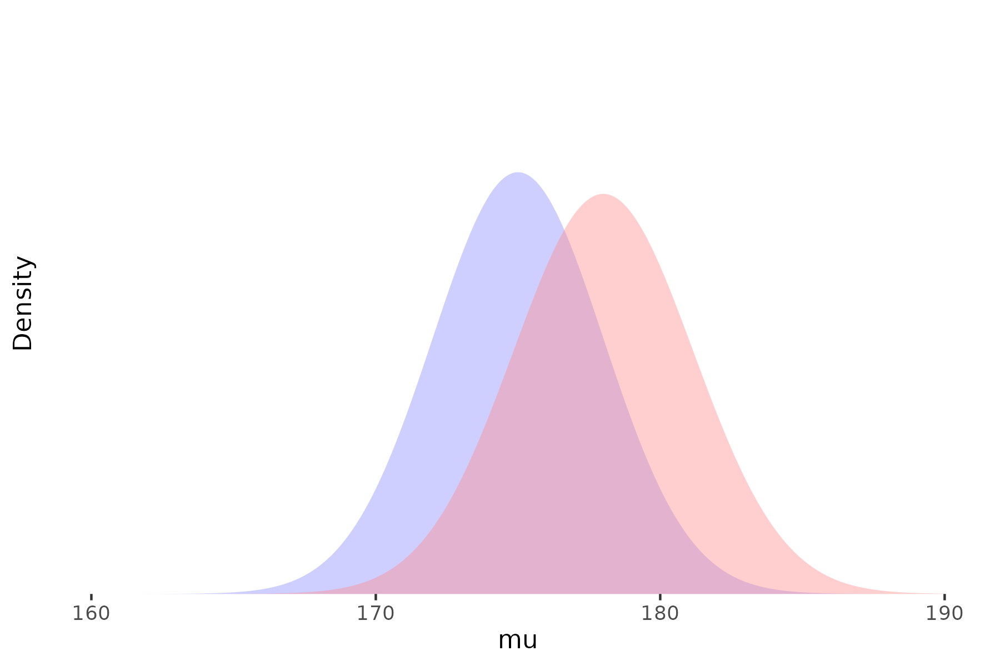
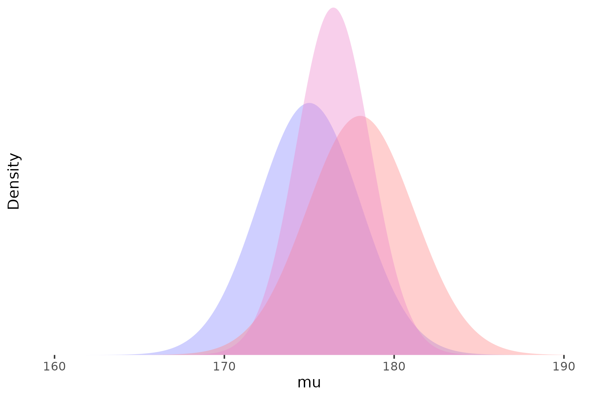
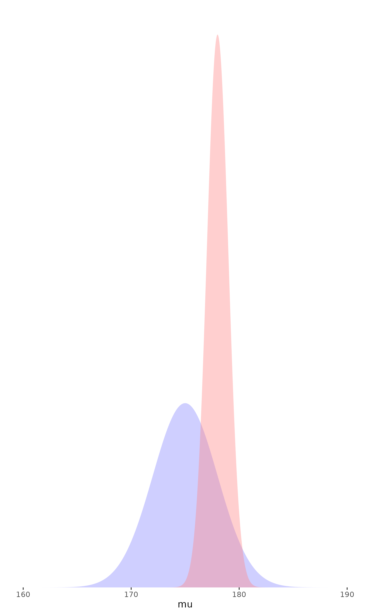
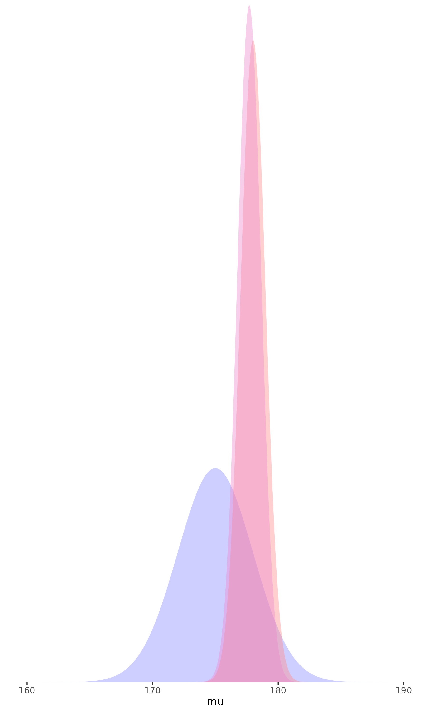

Introduction to Bayesian Analysis
CMOR Lunch’n’Learn
11 April 2024
Ross Wilson
What is the objective of a statistical analysis?
Consider, for example, a clinical trial to estimate a treatment effect
We may want to know:
What is the ‘true’ (average) treatment effect?
How certain are we about that estimate?
What is the range of plausible values of the effect?
What is the probability that the treatment is ‘effective’?
Classical versus Bayesian approaches
Classical versus Bayesian approaches
- We’ll try not to go into too much technical detail
A useful way I have seen it described:
Classical methods tell us what the observed data (e.g. from this trial) tell us about the treatment effect
Bayesian methods tell us how we should update our beliefs about the treatment effect based on these data
Brief review of classical statistics
Maximum likelihood - what true value of the treatment effect is most compatible with observed data?
- For what value of the treatment effect are the observed data most likely to occur?
Hypothesis testing - how likely is it that the observed data could be due to chance alone?
- If there is no true effect of treatment, how likely would the observed (or larger) effect be?
Confidence intervals - what range of values can we be ‘confident’ the treatment effect falls within?
- Almost, but not quite: There is a (say) 95% probability that the true effect lies within the 95% confidence interval
What is Bayesian analysis?
- A probabilistic approach to data analysis and interpretation
Conceptually, we consider the treatment effect to be a random variable
- We can express our beliefs about the value of this variable as a probability distribution
- How should we refine our prior beliefs in light of new data?
Conditional probability
- Probability is conditional on available information
What is the probability it will rain in Dunedin tomorrow?
\(\mathrm{Pr}(\text{Rain tomorrow})\)
\(\mathrm{Pr}(\text{Rain tomorrow}\ |\ \text{Today's weather})\)
\(\mathrm{Pr}(\text{Rain tomorrow}\ |\ \text{Tomorrow's forecast})\)
- Even the first (unconditional) probability is implicitly conditional on some information set (e.g. your general knowledge about Dunedin’s rainfall patterns)
What is Bayesian analysis?
- Bayesian analysis is the process of updating these probabilities in light of new information
- That is, given new \(\mathit{data}\), how should we get from
\[\mathrm{Pr}(A)\]
to
\[\mathrm{Pr}(A\ |\ \mathit{data})\]
Bayes’ Theorem:
\[\mathrm{Pr}(A | B) = \frac{\mathrm{Pr}(B | A) \mathrm{Pr}(A)}{\mathrm{Pr}(B)}\]
- In a statistical model, we are usually interested in probability distributions over continuous variables:
\[f(\theta | y) = \frac{f(y | \theta) f(\theta)}{f(y)}\]
(updated knowledge about a parameter \(\theta\) given data \(y\))
Bayes’ Theorem
- Tells us how to calculate the ‘posterior distribution’ given:
- an assumed data generating model
- prior information/beliefs about the parameter(s)
- current data
\[f(\theta | y) = \frac{f(y | \theta) f(\theta)}{f(y)}\]
\[\mathrm{Posterior} \propto \mathrm{Likelihood} \times \mathrm{Prior}\]
- Informally: updated belief = current evidence \(\times\) prior evidence or belief
Bayes’ Theorem
In principle:
we start with some beliefs about the parameters of interest
review those beliefs in light of the evidence at hand
and calculate an updated belief as a combination of the prior and the new evidence



Prior
Likelihood
Posterior
Specifying priors
- The role of prior beliefs has been the most controversial aspect of Bayesian analysis
Where do our ‘priors’ come from?
Previous research
Common sense/intuition?
‘Weakly informative’ priors
- In most cases there is no ‘correct’ prior, and sensitivity to various plausible priors should be considered
- The more data we have,
the less the prior matters


Why Bayesian analysis?
- Our objective is usually to conclude something about the likely values of a treatment effect (or other outcome of interest)
There is usually at least some prior evidence relevant to the research question
- Be explicit and transparent about the use of external evidence, judgements, and assumptions
Can be much more flexible than traditional approaches
Using more—and more varied—sources of data
More flexible models tailored to particular situations
- Interpretation of results is much more intuitive (and relevant) than most traditional statistical methods
Presentation and interpretation
Bayesian analyses are often quite complex, and care is needed in presentation and interpretation
The prior(s) used should always be explicitly stated and justified
- Sensitivity to different plausible priors should be considered
Bayesian analysis produces an estimated parameter distribution, not a single point estimate
- The mean or median can be used as a central estimate
- Quantiles of the distribution can be used to generate credible intervals
- The probability of specific ranges of parameter values (e.g. \(\mathrm{Pr}(\theta > 0)\)) might be of interest
It is important to note (as in classical analyses) that the distribution captures uncertainty in the parameter estimate, not between-person variability in treatment effects
Comparing classical and Bayesian approaches
- Maximum likelihood
- Classical approaches use the likelihood (i.e. observed data) alone
- Bayesian approaches combine the observed data likelihood with prior beliefs
- Hypothesis testing
- The classical p-value is not \(\mathrm{Pr}(\text{no treatment effect})\)
- Bayesian analysis can tell us \(\mathrm{Pr}(\text{no treatment effect})\) (or any other probability statement about the parameters of interest)
- Confidence intervals
- Again, the classical confidence interval is not strictly a probability statement
- In some (many) cases, classical confidence intervals are identical or very similar to Bayesian equivalents assuming no useful prior information
- When prior information is available, Bayesian credible intervals incorporate that information
Examples
Examples
- These examples are taken from Bayesian Approaches to Clinical Trials and Health-Care Evaluation by Spiegelhalter et al. (2003), and Bayesian Data Analysis (Third edition) by Gelman et al. (2020)
- I hope to give some idea of the range and flexibility of Bayesian analysis
- We will focus on the ‘What’ and the ‘Why’, not on the ‘How’
Diagnostic testing
Suppose have a new HIV test, which has 95% sensitivity and 98% specificity
We want to use the test for screening, in a population with HIV prevalence of 1/1000
- What is the probability that someone has HIV, given that they have tested positive?
Diagnostic testing
- Consider the expected status of 100,000 individuals being screened
| HIV− | HIV+ | ||
|---|---|---|---|
| Test− | 97 902 | 5 | 97 903 |
| Test+ | 1 998 | 95 | 2 093 |
| 99 900 | 100 | 100 000 |
- The probability of having HIV given a positive test can be calculated: \[\mathrm{Pr}(\text{HIV}^+\ |\ \text{test}^+) = \frac{95}{2093} = 0.045\]
Diagnostic testing
Using Bayes’ theorem: \[\mathrm{Pr}(\text{HIV}^+\ |\ \text{test}^+) = \frac{\mathrm{Pr}(\text{test}^+\ |\ \text{HIV}^+)\ \mathrm{Pr}(\text{HIV}^+)}{\mathrm{Pr}(\text{test}^+)}\]
\(\mathrm{Pr}(\text{test}^+\ |\ \text{HIV}^+)\) is the sensitivity, \(0.95\)
\(\mathrm{Pr}(\text{HIV}^+)\) is \(1 / 1000 = 0.001\)
\(\mathrm{Pr}(\text{test}^+)\) can be calculated as
\(\mathrm{Pr}(\text{test}^+\ |\ \text{HIV}^-)\ \mathrm{Pr}(\text{HIV}^-) + \mathrm{Pr}(\text{test}^+\ |\ \text{HIV}^+)\ \mathrm{Pr}(\text{HIV}^+)\)
\(\ \ \ \ = 0.02 \times 0.999 + 0.95 \times 0.001 = 0.02093\)
Therefore, \[\mathrm{Pr}(\text{HIV}^+\ |\ \text{test}^+) = \frac{0.95 \times 0.001}{0.02093} = 0.045\]
Diagnostic testing
- More than 95% of those testing positive will not actually have HIV!
Note that this is very sensitive to the base rate (the proportion who have HIV in the population being tested)
If the test was used for diagnosis in people suspected of having HIV, such that, say \(\mathrm{Pr}(\text{HIV}^+) = 0.2\), then \[\mathrm{Pr}(\text{HIV}^+\ |\ \text{test}^+) = \frac{0.95 \times 0.2}{0.206} = 0.922\]
A simple RCT analysis
The GREAT trial was a study of a new drug for early treatment after myocardial infarction, compared with placebo
The primary outcome was 30-day mortality rate, with data:
| New | Placebo | ||
|---|---|---|---|
| Death | 13 | 23 | 36 |
| No death | 150 | 125 | 275 |
| 163 | 148 | 311 |
A simple RCT analysis
Standard analysis of these data gives an OR of (13 / 150) / (23 / 125) = 0.47, with 95% CI 0.24 to 0.97
- That is, a fairly large reduction in mortality, just reaching statistical significance at the 5% level
- From a Bayesian perspective, we need to consider what our prior belief is (was) on the plausible range of true effects, and how these results should cause us to revise those beliefs
Prior distribution was based on the subjective judgement of a senior cardiologist, informed by previous published and unpublished studies
‘an expectation of 15–20% reduction in mortality is highly plausible, while the extremes of no benefit and a 40% relative reduction are both unlikely’
Two initial thoughts on this prior:
This is a strong prior judgement, compared to the amount of information provided by the trial
If we are already confident that the treatment is effective, why are we doing the trial?
- Combining this prior with the observed data gives posterior estimate of 0.73 (95% credible interval 0.58 to 0.93)
A simple RCT analysis
Bayesian analysis can also be used to ask how the results of this trial should change the views of a reasonably skeptical observer
- That is, with no prior view one way or the other, but believing large treatment effects are unlikely
Assuming a prior centred on no effect (OR = 1), with 95% interval from 50% reduction (OR = 0.5) to 100% increase (OR = 2):
Posterior OR = 0.70 (95% interval 0.43 to 1.14), i.e., no effect would still be considered reasonably plausible
Multiplicity and hierarchical models
- Problems of multiplicity are well-recognised in traditional statistical analyses
- If we test multiple outcomes, multiple subsets of participants, multiple treatment group contrasts, we will inevitably find some ‘significant’ results, even if there are no true effects
- In a Bayesian analysis, these multiple endpoints can often be nested within a larger hierarchical model
Educational coaching interventions in 8 schools
- A study was performed of coaching programs to improve SAT scores in each of 8 schools
- Estimates of the treatment effect were obtained separately from each school
| School | Estimated treatment effect | Standard error of effect estimate |
|---|---|---|
| A | 28 | 15 |
| B | 8 | 10 |
| C | −3 | 16 |
| D | 7 | 11 |
| E | −1 | 9 |
| F | 1 | 11 |
| G | 18 | 10 |
| H | 12 | 18 |
Educational coaching interventions in 8 schools
We can distinguish 3 different assumptions about the relationship between these estimates:
Identical parameters: All the true effects are identical, and the observed differences are due to sampling variation
Independent parameters: The true effects are independent—knowledge about one tells us nothing about the likely values of the others
Exchangeable parameters: The true effects are different, but drawn from a common distribution
- The results from each school will affect our estimate of that common distribution, and therefore our estimate of the ‘true’ effect in the other schools
Educational coaching interventions in 8 schools
What do these different assumptions imply for our results and interpretation?
Identical parameters: We can pool the results from all studies (weighted by the inverse of the sampling variances)
- We get an estimate of 7.7 points (S.E. 4.1) for the (common) treatment effect in all schools
Independent parameters: Take the estimates in the table at face value
Exchangeable parameters: Estimate a Bayesian hierarchical model
Assume the ‘true’ effects in each school are drawn from a normal (or other) distribution, and estimate the parameters (mean, sd) of that distribution
This requires us to specify prior beliefs about the mean and standard deviation of the effect distribution
(For now, we assume non-informative prior distributions for both)The effects for all schools are pulled towards the sample mean (between 5 and 10 points, instead of between –3 and 28, but with substantial uncertainty)
Meta-analysis
Similar hierarchical models can be used for meta-analysis as well
We consider an example of a meta-analysis of beta-blockers for reducing mortality after myocardial infarction
The study included 22 clinical trials, with data for the first few as shown
| Study | Control | Treated | Log(OR) | SE |
|---|---|---|---|---|
| 1 | 3/39 | 3/38 | 0.028 | 0.850 |
| 2 | 14/116 | 7/114 | -0.741 | 0.483 |
| 3 | 11/93 | 5/69 | -0.541 | 0.565 |
| 4 | 127/1520 | 102/1533 | -0.246 | 0.138 |
| 5 | 27/365 | 28/355 | 0.069 | 0.281 |
| 6 | 6/52 | 4/59 | -0.584 | 0.676 |
| 7 | 152/939 | 98/945 | -0.512 | 0.139 |
| 8 | 48/471 | 60/632 | -0.079 | 0.204 |
Meta-analysis
As before, if we assume exchangeability between the studies, we can estimate a Bayesian hierarchical model for the treatment effects
The results, using a non-informative prior, are
| Estimand | 2.5% | 25% | Median | 75% | 97.5% |
|---|---|---|---|---|---|
| Mean | −0.37 | −0.29 | −0.25 | −0.20 | −0.11 |
| Standard deviation | 0.02 | 0.08 | 0.13 | 0.18 | 0.31 |
Meta-analysis
There are several estimands that may be of interest:
The mean of the distribution of effect sizes
The effect size in any of the observed studies
The effect size in a new comparable study
| Estimand | 2.5% | 25% | Median | 75% | 97.5% |
|---|---|---|---|---|---|
| Mean | −0.37 | −0.29 | −0.25 | −0.20 | −0.11 |
| Standard deviation | 0.02 | 0.08 | 0.13 | 0.18 | 0.31 |
| Predicted effect | −0.58 | −0.34 | −0.25 | −0.17 | 0.11 |
One more example to be added
- Something demonstrating the use of external data (e.g. observational studies as well as trials)
Bayesian analysis in practice
Software
- Historically, conducting Bayesian analysis required specialised software/modelling languages
- BUGS (Bayesian inference Using Gibbs Sampling)
- JAGS (Just Another Gibbs Sampler)
- Stan
- Most general-purpose statistical programs these days have (at least some) Bayesian methods available
- R: e.g.
rstanarm,brms- Also direct interface to Bayesian modelling languages with
rstan,rjags
- Also direct interface to Bayesian modelling languages with
- Stata (also StataStan)
- SAS, SPSS ?
- R: e.g.
Model checking
- We won’t go into this in any detail today, but it is a very important part of any Bayesian analysis
- Posterior predictive checks
- The model can be used to predict outcomes both in- and out-of-sample
- Do these predictions make sense (face validity)? Are they consistent with observed data?
- Model convergence
- Bayesian models are generally estimated by simulation methods
- Has the simulation converged to a stable distibution of parameter values?
References
- Recommended textbooks:
- Introductory: Doing Bayesian Data Analysis: A tutorial with R, JAGS, and Stan, 2nd Edition. John K. Kruschke (2015)
- Mostly non-technical presentation of applied Bayesian analysis
- eBook available for download via the library
- Intermediate: Statistical Rethinking: A Bayesian Course with Examples in R and Stan, 2nd Edition. Richard McElreath (2020)
- How to think about statistics in terms of data generating models
- I couldn’t find an eBook version, but there are video lectures by the author on YouTube: https://www.youtube.com/playlist?list=PLDcUM9US4XdPz-KxHM4XHt7uUVGWWVSus
- Intermediate: Bayesian Approaches to Clinical Trials and Health-Care Evaluation. David J. Spiegelhalter, Keith R. Abrams, Jonathan P. Myles (2004)
- Focus on RCTs and some other clinical research designs, presenting several interesting examples of different uses of Bayesian methods
- eBook available for download via the library
- Advanced: Bayesian Data Analysis, 3rd Edition. Andrew Gelman, John B. Carlin, Hal S. Stearn, David B. Dunson, Aki Vehtari, and Donald B. Rubin (2013)
- Parts of this are quite advanced, but it also has lots of useful examples and applications
- PDF version available from Gelman’s website: http://www.stat.columbia.edu/~gelman/book/
- Introductory: Doing Bayesian Data Analysis: A tutorial with R, JAGS, and Stan, 2nd Edition. John K. Kruschke (2015)